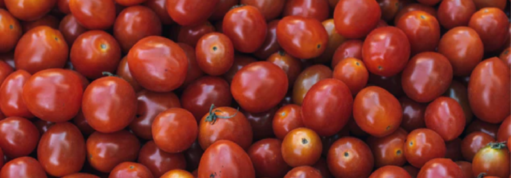

Desde limache con amor
Los tomates que estás a punto de comprar son nacidos y criados en una de las mejores zonas para la producción de tomates de Chile. El proceso que conlleva criar estos tomates toma alrededor de tres mese de muchos cariños y cuidados.
Los tomates toman todos los nutrientes de esta hermosa tierra para que luego tú los disfrutes en cualquier ocación